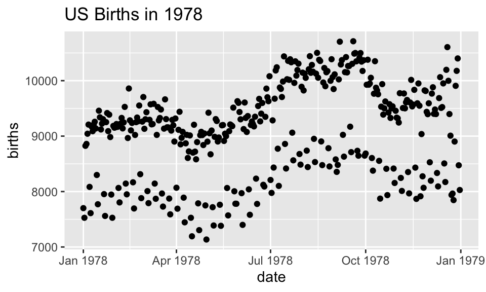
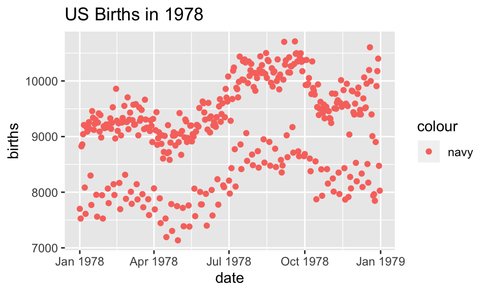
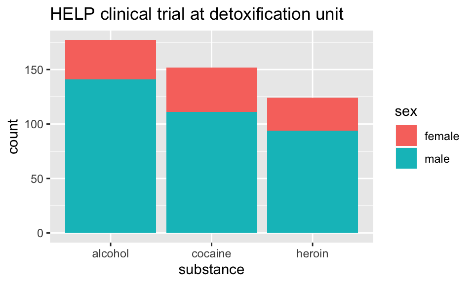

Chapter 3 Visualization
Data visualization is integral to understanding both data and models. Computational statistics and data science sometimes focus on models or resulting predictions from the models. But there is no doubt that the structure and format of the data are the key to whether or not a model is appropriate or good. A good data analyst will always spend a lot of time and effort on exploratory data analysis, much of which includes making as many visualizations of the data as possible.
3.1 Deconstructing a graph
3.1.1 The Grammar of Graphics (gg)
Yau (2013) and Wickham (2014) have come up with a taxonomy and a grammar for thinking about the parts of a figure just like we conceptualize the parts of a body or the parts of a sentence.
One great way of thinking of the new process: it is not longer necessary to talk about the name of the graph (e.g., boxplot). Instead we now think in glyphs (geoms), and so we can put whatever we want on the plot. Note also that the transition leads you from a passive consumer (I need to make plot XXX because everyone else does, so I just plug in the data) into an active participant (what do I want my data to say? and how can I put that information onto my graphic?)
The most important questions you can ask with respect to creating figures are:
- What do we want R to do? (What is the goal?)
- What does R need to know?
3.1.1.1 The grammar of graphics in ggplot2
geom: the geometric “shape” used to display data
- bar, point, line, ribbon, text, etc.
aesthetic: an attribute controlling how geom is displayed with respect to variables
- x position, y position, color, fill, shape, size, etc.
scale: adjust information in the aesthetic to map onto the plot
- particular assignment of colors, shapes, sizes, etc.; making axes continuous or constrained to a particular range of values.
guide: helps user convert visual data back into raw data (legends, axes)
stat: a transformation applied to data before geom gets it
- example: histograms work on binned data
3.1.2 ggplot2
Important note!
While
dplyrchains functions using%>%
ggplotchains functions using+
In ggplot2, an aesthetic refers to a mapping between a variable and the information it conveys on the plot. Further information about plotting and visualizing information is given in chapter 2 (Data visualization) of Baumer, Kaplan, and Horton (2017). Much of the data in the presentation represents all births from 1978 in the US: the date, the day of the year, and the number of births.
Goals
What I will try to do
give a tour of
ggplot2explain how to think about plots the
ggplot2wayprepare/encourage you to learn more later
What I can’t do in one session
show every bell and whistle
make you an expert at using
ggplot2
Getting help
One of the best ways to get started with ggplot is to google what you want to do with the word ggplot. Then look through the images that come up. More often than not, the associated code is there. There are also ggplot galleries of images, one of them is here: https://plot.ly/ggplot2/
ggplot2cheat sheet: https://www.rstudio.com/wp-content/uploads/2015/03/ggplot2-cheatsheet.pdfLook at the end of the presentation. More help options there.

require(mosaic)
require(lubridate) # package for working with dates
data(Births78) # restore fresh version of Births78
head(Births78, 3)## date births wday year month day_of_year day_of_month day_of_week
## 1 1978-01-01 7701 Sun 1978 1 1 1 1
## 2 1978-01-02 7527 Mon 1978 1 2 2 2
## 3 1978-01-03 8825 Tue 1978 1 3 3 3How can we make the plot?

Two Questions:
What do we want R to do? (What is the goal?)
What does R need to know?
data source:
Births78aesthetics:
date -> xbirths -> y- points (!)
Goal: scatterplot = a plot with points
ggplot() + geom_point()
What does R need to know?
data source:
data = Births78aesthetics:
aes(x = date, y = births)
How can we make the plot?
What has changed?
- new aesthetic: mapping color to day of week
Adding day of week to the data set
The wday() function in the lubridate package computes the day of the week from a date.
How can we make the plot?
Now we use lines instead of dots
How can we make the plot?

Now we have two layers, one with points and one with lines
ggplot(data=Births78,
aes(x=date, y=births, color=wday)) +
geom_point() + geom_line()+
ggtitle("US Births in 1978")The layers are placed one on top of the other: the points are below and the lines are above.
dataandaesspecified inggplot()affect all geoms
Alternative Syntax
Births78 %>%
ggplot(aes(x=date, y=births, color=wday)) +
geom_point() +
geom_line()+
ggtitle("US Births in 1978")
What does adding the color argument do?
Births78 %>%
ggplot(aes(x=date, y=births, color="navy")) +
geom_point() +
ggtitle("US Births in 1978")
Because there is no variable, we have mapped the color aesthetic to a new variable with only one value (“navy”). So all the dots get set to the same color, but it’s not navy.
Setting vs. Mapping
If we want to set the color to be navy for all of the dots, we do it outside the aesthetic, without a dataset variable:
Births78 %>%
ggplot(aes(x=date, y=births)) + # map x & y
geom_point(color = "navy") + # set color
ggtitle("US Births in 1978")
- Note that
color = "navy"is now outside of the aesthetics list. That’s howggplot2distinguishes between mapping and setting.
How can we make the plot?
Births78 %>%
ggplot(aes(x=date, y=births)) +
geom_line(aes(color=wday)) + # map color here
geom_point(color="navy") + # set color here
ggtitle("US Births in 1978")ggplot()establishes the default data and aesthetics for the geoms, but each geom may change the defaults.good practice: put into
ggplot()the things that affect all (or most) of the layers; rest ingeom_blah()
Setting vs. Mapping (again)
Information gets passed to the plot via:
mapthe variable information inside the aes (aesthetic) commandsetthe non-variable information outside the aes (aesthetic) command
Other geoms
[1] "geom_abline" "geom_area" "geom_ash"
[4] "geom_bar" "geom_barh" "geom_bin2d"
[7] "geom_blank" "geom_boxplot" "geom_boxploth"
[10] "geom_col" "geom_colh" "geom_contour"
[13] "geom_count" "geom_crossbar" "geom_crossbarh"
[16] "geom_curve" "geom_density" "geom_density_2d"
[19] "geom_density2d" "geom_dotplot" "geom_errorbar"
[22] "geom_errorbarh" "geom_errorbarh" "geom_freqpoly"
[25] "geom_hex" "geom_histogram" "geom_histogramh"
[28] "geom_hline" "geom_jitter" "geom_label"
[31] "geom_line" "geom_linerange" "geom_linerangeh"
[34] "geom_lm" "geom_map" "geom_path"
[37] "geom_point" "geom_pointrange" "geom_pointrangeh"
[40] "geom_polygon" "geom_qq" "geom_qq_line"
[43] "geom_quantile" "geom_raster" "geom_rect"
[46] "geom_ribbon" "geom_rug" "geom_segment"
[49] "geom_sf" "geom_sf_label" "geom_sf_text"
[52] "geom_smooth" "geom_spline" "geom_spoke"
[55] "geom_step" "geom_text" "geom_tile"
[58] "geom_violin" "geom_violinh" "geom_vline" help pages will tell you their aesthetics, default stats, etc.
Let’s try geom_area

Using area does not produce a good plot
- over plotting is hiding much of the data
- extending y-axis to 0 may or may not be desirable.
Side note: what makes a plot good?
Most (all?) graphics are intended to help us make comparisons
- How does something change over time?
- Do my treatments matter? How much?
- Do men and women respond the same way?
Key plot metric: Does my plot make the comparisons I am interested in
- easily, and
- accurately?
Time for some different data
HELPrct: Health Evaluation and Linkage to Primary care randomized clinical trial
## age anysubstatus anysub cesd d1 daysanysub dayslink drugrisk e2b female
## 1 37 1 yes 49 3 177 225 0 NA 0
## 2 37 1 yes 30 22 2 NA 0 NA 0
## 3 26 1 yes 39 0 3 365 20 NA 0
## 4 39 1 yes 15 2 189 343 0 1 1
## 5 32 1 yes 39 12 2 57 0 1 0
## 6 47 1 yes 6 1 31 365 0 NA 1
## sex g1b homeless i1 i2 id indtot linkstatus link mcs pcs
## 1 male yes housed 13 26 1 39 1 yes 25.111990 58.41369
## 2 male yes homeless 56 62 2 43 NA <NA> 26.670307 36.03694
## 3 male no housed 0 0 3 41 0 no 6.762923 74.80633
## 4 female no housed 5 5 4 28 0 no 43.967880 61.93168
## 5 male no homeless 10 13 5 38 1 yes 21.675755 37.34558
## 6 female no housed 4 4 6 29 0 no 55.508991 46.47521
## pss_fr racegrp satreat sexrisk substance treat avg_drinks max_drinks
## 1 0 black no 4 cocaine yes 13 26
## 2 1 white no 7 alcohol yes 56 62
## 3 13 black no 2 heroin no 0 0
## 4 11 white yes 4 heroin no 5 5
## 5 10 black no 6 cocaine no 10 13
## 6 5 black no 5 cocaine yes 4 4Subjects admitted for treatment for addiction to one of three substances.
Who are the people in the study?
HELPrct %>%
ggplot(aes(x=substance)) +
geom_bar()+
ggtitle("HELP clinical trial at detoxification unit")
Hmm. What’s up with
y?stat_bin()is being applied to the data before thegeom_bar()gets to do its thing. Binning creates theyvalues.
Who are the people in the study?
HELPrct %>%
ggplot(aes(x=substance, fill=sex)) +
geom_bar()+
ggtitle("HELP clinical trial at detoxification unit")
Who are the people in the study?
Who are the people in the study?
HELPrct %>%
ggplot(aes(x=substance, fill=sex)) +
geom_bar(position="fill") +
scale_y_continuous("actually, percent")+
ggtitle("HELP clinical trial at detoxification unit")
How old are people in the HELP study?
HELPrct %>%
ggplot(aes(x=age)) +
geom_histogram()+
ggtitle("HELP clinical trial at detoxification unit")## `stat_bin()` using `bins = 30`. Pick better value with `binwidth`.Notice the messages
stat_bin: Histograms are not mapping the raw data but binned data.
stat_bin()performs the data transformation.binwidth: a defaultbinwidthhas been selected, but we should really choose our own.
Setting the binwidth manually
HELPrct %>%
ggplot(aes(x=age)) +
geom_histogram(binwidth=2)+
ggtitle("HELP clinical trial at detoxification unit")
How old are people in the HELP study? – Other geoms
HELPrct %>%
ggplot(aes(x=age)) +
geom_freqpoly(binwidth=2)+
ggtitle("HELP clinical trial at detoxification unit")
Selecting stat and geom manually
Every geom comes with a default stat
- for simple cases, the stat is
stat_identity()which does nothing - we can mix and match geoms and stats however we like
HELPrct %>%
ggplot(aes(x=age)) +
geom_line(stat="density")+
ggtitle("HELP clinical trial at detoxification unit")
Selecting stat and geom manually
Every stat comes with a default geom, every geom with a default stat
- we can specify stats instead of
geom, if we prefer - we can mix and match geoms and stats however we like
More combinations
HELPrct %>%
ggplot(aes(x=age)) +
geom_point(stat="bin", binwidth=3) +
geom_line(stat="bin", binwidth=3) +
ggtitle("HELP clinical trial at detoxification unit")
HELPrct %>%
ggplot(aes(x=age)) +
geom_area(stat="bin", binwidth=3) +
ggtitle("HELP clinical trial at detoxification unit") 
HELPrct %>%
ggplot(aes(x=age)) +
geom_point(stat="bin", binwidth=3, aes(size=..count..)) +
geom_line(stat="bin", binwidth=3) +
ggtitle("HELP clinical trial at detoxification unit")
How much do they drink? (i1)
HELPrct %>%
ggplot(aes(x=i1)) + geom_histogram()+
ggtitle("HELP clinical trial at detoxification unit")
HELPrct %>%
ggplot(aes(x=i1)) + geom_density()+
ggtitle("HELP clinical trial at detoxification unit")
Covariates: Adding in more variables
Using color and linetype:
HELPrct %>%
ggplot(aes(x=i1, color=substance, linetype=sex)) +
geom_line(stat="density")+
ggtitle("HELP clinical trial at detoxification unit")Using color and facets
HELPrct %>%
ggplot(aes(x=i1, color=substance)) +
geom_line(stat="density") + facet_grid( . ~ sex )+
ggtitle("HELP clinical trial at detoxification unit")HELPrct %>%
ggplot(aes(x=i1, color=substance)) +
geom_line(stat="density") + facet_grid( sex ~ . )+
ggtitle("HELP clinical trial at detoxification unit")
Boxplots
Boxplots use stat_quantile() which computes a five-number summary (roughly the five quartiles of the data) and uses them to define a “box” and “whiskers”.
The quantitative variable must be y, and there must be an additional x variable.
Horizontal boxplots
Horizontal boxplots are obtained by flipping the coordinate system:
HELPrct %>%
ggplot(aes(x=substance, y=age, color=sex)) +
geom_boxplot() +
coord_flip()+
ggtitle("HELP clinical trial at detoxification unit")
coord_flip()may be used with other plots as well to reverse the roles ofxandyon the plot.
Axes scaling with boxplots
We can scale the continuous axis
Give me some space
We’ve triggered a new feature: dodge (for dodging things left/right). We can control how much if we set the dodge manually.
Issues with bigger data
## [1] 10000 76NHANES %>% ggplot(aes(x=Height, y=Weight)) +
geom_point() + facet_grid( Gender ~ PregnantNow ) +
ggtitle("National Health and Nutrition Examination Survey")- Although we can see a generally positive association (as we would expect), the over plotting may be hiding information.
Using alpha (opacity)
One way to deal with over plotting is to set the opacity low.
NHANES %>%
ggplot(aes(x=Height, y=Weight)) +
geom_point(alpha=0.01) + facet_grid( Gender ~ PregnantNow ) +
ggtitle("National Health and Nutrition Examination Survey")
geom_density2d
Alternatively (or simultaneously) we might prefer a different geom altogether.
NHANES %>%
ggplot(aes(x=Height, y=Weight)) +
geom_density2d() + facet_grid( Gender ~ PregnantNow ) +
ggtitle("National Health and Nutrition Examination Survey")
Multiple layers
ggplot( data=HELPrct, aes(x=sex, y=age)) +
geom_boxplot(outlier.size=0) +
geom_jitter(alpha=.6) +
coord_flip()+
ggtitle("HELP clinical trial at detoxification unit")
Multiple layers
ggplot( data=HELPrct, aes(x=sex, y=age)) +
geom_boxplot(outlier.size=0) +
geom_point(alpha=.6, position=position_jitter(width=.1, height=0)) +
coord_flip()+
ggtitle("HELP clinical trial at detoxification unit")
Things I haven’t mentioned (much)
coords (
coord_flip()is good to know about)themes (for customizing appearance)
position (
position_dodge(),position_jitterdodge(),position_stack(), etc.)transforming axes

ggplot(data=HELPrct, aes(x=substance, y=age, color=sex)) +
geom_boxplot(coef = 10, position=position_dodge()) +
geom_point(aes(color=sex, fill=sex), position=position_jitterdodge()) +
ggtitle("HELP clinical trial at detoxification unit")
A little bit of everything
ggplot( data=HELPrct, aes(x=substance, y=age, color=sex)) +
geom_boxplot(coef = 10, position=position_dodge(width=1)) +
geom_point(aes(fill=sex), alpha=.5,
position=position_jitterdodge(dodge.width=1)) +
facet_wrap(~homeless)+
ggtitle("HELP clinical trial at detoxification unit")

What else can we do?
shiny
interactive graphics / modeling
plotly
Plotlyis an R package for creating interactive web-based graphs via plotly’s JavaScript graphing library,plotly.js. TheplotlyR library contains theggplotlyfunction , which will convertggplot2figures into a Plotly object. Furthermore, you have the option of manipulating the Plotly object with thestylefunction.
Dynamic documents
- combination of
RMarkdown,ggvis, andshiny
References
Baumer, Kaplan, and Horton. 2017. Modern Data Science with R. CRC Press. https://mdsr-book.github.io/.
Wickham, Hadley. 2014. “Tidy Data.” Journal of Statistical Software 59 (10). http://www.jstatsoft.org/v59/i10/paper.
Yau, Nathan. 2013. Data Points: Visualization That Means Something. Wiley.